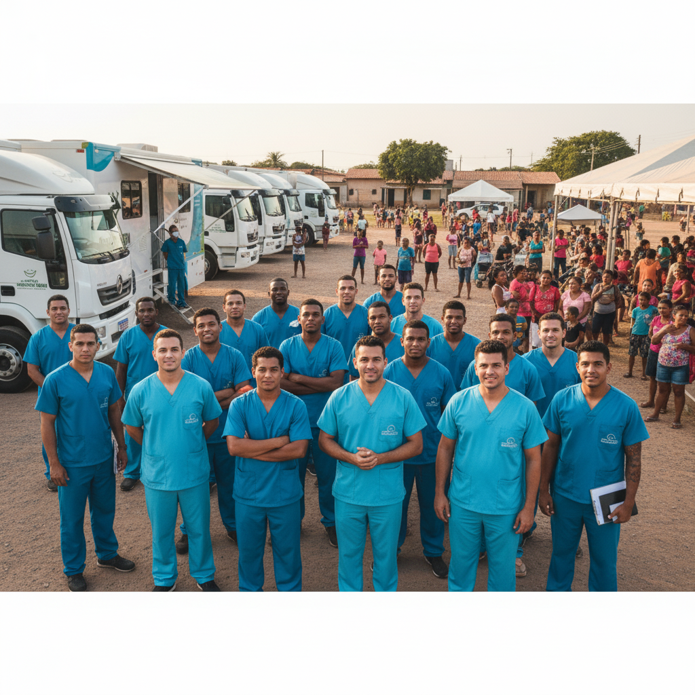

Projetos Sociais:
Boca Saudável na Gestação e Primeira Infância:
Público: Gestantes, lactantes e pais/responsáveis de bebês e crianças pequenas.
Ações: Palestras sobre a importância da saúde bucal materna (riscos de infecções),cuidados com a boca do bebê antes e depois do nascimento dos dentes e orientação sobre aleitamento materno e alimentação complementar.
Diferencial: Parceria com Unidades Básicas de Saúde (UBS) ou grupos de apoio à gestante.
Caravana do Sorriso:
Público: Comunidades rurais, ribeirinhas, indígenas ou bairros de alta vulnerabilidade social.
Ações: Montar uma estrutura de atendimento odontológico móvel ou temporária (em escolas, igrejas ou associações de bairro) para realizar triagens, restaurações simples, extrações e profilaxias.
Diferencial: Envolver profissionais de diferentes áreas da saúde (médicos, enfermeiros) para um atendimento integral.
Mutirão Odontológico
Realizamos mutirões com triagem, atendimentos e encaminhamentos para tratamentos mais complexos em nossas unidades Fixas e Moveis.
Voluntarios
Profissionais da odontologia e estudantes podem se inscrever para atuar nas campanhas. Oferecemos certificados de participação.
Cadastre-se aqui para receber informações sobre próximas ações.
Como doar
As doações são essenciais para compra de materiais, instrumentais e transporte. Aceitamos doações financeiras e de materiais.
- Doação financeira: transferência via PIX (chave: pix@projetosorrirbem.org)
- Doação de materiais: entre em contato pelo telefone para agendar coleta
- Toda Nossa prestação de contas Feitas semanalmente via Lives nas Redes Sociais: @Projetosorrirbem